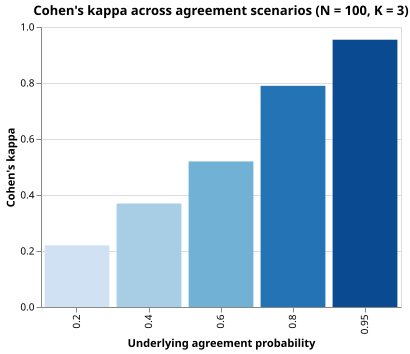

Inter-Rater Agreement
The Problem
- In qualitative research, clinical coding, or data annotation, two or more human raters independently assign categories to the same observations
- The fraction of observations on which raters agree is straightforward to compute, but it is inflated by the agreement that would occur by chance even if raters were assigning labels randomly.
- Cohen's kappa corrects for chance agreement and produces a standardized measure of how much the observed agreement exceeds the expectation under independence
- Our approach:
- Generate synthetic rating pairs with a known underlying agreement probability using a controlled random model
- Construct the contingency table of rater label pairs and compute kappa with its standard error
- Compare kappa across several scenarios with different agreement levels
Two raters each independently assign one of three equally likely categories to 100 items. Even if they have no shared understanding of the categories, what fraction of items do they agree on by chance?
- 0%, because random assignment never produces agreement.
- Wrong: by chance, whenever both raters happen to pick the same category for the same item they agree; with three equally likely categories that happens 1/3 of the time.
- About 33%, because with three equally likely categories the probability of
- two independent draws matching is 1/3.
- Correct: P(agree by chance) = sum over k of P(A = k) * P(B = k) = 3 * (1/3)^2 = 1/3.
- About 50%, because raters tend to pick the most common category.
- Wrong: with equally likely categories no single category dominates; the expected agreement is 1/K where K is the number of categories.
- 100%, because raters always agree eventually with enough practice.
- Wrong: practice is not relevant here; the calculation is a probability under the assumption of independent uniform random choices.
The Contingency Table
- For $K$ categories, the contingency table is a $K \times K$ integer matrix where entry $C_{ij}$ is the number of items for which rater A assigned category $i$ and rater B assigned category $j$
- The diagonal entries $C_{ii}$ represent agreements, while off-diagonal entries represent disagreements
- The table summarises all information needed to compute kappa
def contingency_table(rater_a, rater_b, n_cats):
"""Return a (n_cats x n_cats) integer contingency table.
table[i, j] is the number of items for which rater A assigned
category i and rater B assigned category j. Diagonal entries
represent agreement; off-diagonal entries represent disagreement.
"""
table = np.zeros((n_cats, n_cats), dtype=int)
for a, b in zip(rater_a, rater_b):
table[a, b] += 1
return table
Cohen's Kappa
- Let $N$ be the total number of items and:
- $P_o = \sum_i C_{ii} / N$: observed agreement proportion
- $p_i = \sum_j C_{ij} / N$: rater A's marginal probability for category $i$
- $q_j = \sum_i C_{ij} / N$: rater B's marginal probability for category $j$
- $P_e = \sum_i p_i q_i$: expected agreement under independence
- Cohen's kappa is:
$$\kappa = \frac{P_o - P_e}{1 - P_e}$$
- $\kappa = 0$ when observed agreement equals the chance expectation
- $\kappa = 1$ when raters agree perfectly ($P_o = 1$)
- $\kappa < 0$ is possible when observed agreement falls below chance, though this rarely occurs in practice
A 3x3 contingency table has 20 items on each diagonal cell and 5 items on each off-diagonal cell (N = 90). Given P_o = 2/3 and P_e = 1/3, what is kappa?
def cohen_kappa(table):
"""Return Cohen's kappa and its standard error from a contingency table.
Parameters
----------
table : (K, K) integer array; table[i, j] = count where rater A said i
and rater B said j
Returns
-------
kappa : Cohen's kappa, correcting for chance agreement
se : asymptotic standard error of kappa
Derivation
----------
N = total item count
P_o = sum(diagonal) / N (observed agreement proportion)
p_i = row_i_sum / N (rater A's marginal for category i)
q_j = col_j_sum / N (rater B's marginal for category j)
P_e = sum_i(p_i * q_i) (expected agreement under independence)
kappa = (P_o - P_e) / (1 - P_e)
The standard error uses the asymptotic formula of Cohen (1960):
se = sqrt(P_o * (1 - P_o) / (N * (1 - P_e)^2))
This approximates SE(P_o) = sqrt(P_o*(1-P_o)/N) and propagates it
through the kappa formula, ignoring variability in P_e.
"""
n = table.sum()
p_o = table.diagonal().sum() / n
row_sums = table.sum(axis=1) / n
col_sums = table.sum(axis=0) / n
p_e = float((row_sums * col_sums).sum())
kappa = (p_o - p_e) / (1.0 - p_e)
se = np.sqrt(p_o * (1.0 - p_o) / (n * (1.0 - p_e) ** 2))
return float(kappa), float(se)
The Expected Agreement P_e
- $P_e = \sum_i p_i q_i$ is the probability that two independently drawn labels (one from rater A's marginal, one from rater B's) happen to match
- Under the generation model used here,
with probability
agree_probboth raters draw the same uniform label, and otherwise they draw independently - With $K$ categories this gives:
$$P_o = \text{agree\_prob} + \frac{1 - \text{agree\_prob}}{K}$$
- When marginals are uniform ($p_i = q_i = 1/K$): $P_e = K \cdot (1/K)^2 = 1/K$
- Substituting into the kappa formula and simplifying gives $\kappa = \text{agree_prob}$.
- So the synthetic generator produces data where the expected kappa directly equals the underlying agreement probability, making it easy to verify the implementation
Generating Synthetic Rating Data
def make_ratings(n_items=N_ITEMS, n_cats=N_CATS, agree_prob=AGREE_PROB, seed=SEED):
"""Return a Polars DataFrame of paired rater label vectors.
Columns:
rater_a -- integer category label from rater A (0 to n_cats - 1)
rater_b -- integer category label from rater B (0 to n_cats - 1)
For each item, with probability agree_prob both raters draw the same
category uniformly from 0..n_cats-1. With probability 1 - agree_prob
each rater independently draws a category uniformly. Under this model
the expected Cohen's kappa equals agree_prob when marginals are uniform
(see lesson for the derivation).
"""
rng = np.random.default_rng(seed)
a_labels = np.empty(n_items, dtype=int)
b_labels = np.empty(n_items, dtype=int)
for i in range(n_items):
if rng.random() < agree_prob:
label = int(rng.integers(0, n_cats))
a_labels[i] = label
b_labels[i] = label
else:
a_labels[i] = int(rng.integers(0, n_cats))
b_labels[i] = int(rng.integers(0, n_cats))
return pl.DataFrame({"rater_a": a_labels.tolist(), "rater_b": b_labels.tolist()})
Standard Error of Kappa
- The asymptotic standard error is:
$$\text{SE}(\kappa) = \sqrt{\frac{P_o(1 - P_o)}{N(1 - P_e)^2}}$$
- This approximates $\text{SE}(P_o) = \sqrt{P_o(1-P_o)/N}$ (each item is an independent Bernoulli trial for agreement) and propagates it through the kappa formula by dividing by $(1 - P_e)$
- A 95% confidence interval for $\kappa$ is $\kappa \pm 1.96 \cdot \text{SE}(\kappa)$
Comparing Scenarios
def plot_kappa_scenarios(scenarios, n_items, n_cats, seed, filename):
"""Save a bar chart of kappa values across underlying agreement scenarios."""
records = []
for prob in scenarios:
df = make_ratings(n_items=n_items, n_cats=n_cats, agree_prob=prob, seed=seed)
table = contingency_table(
df["rater_a"].to_numpy(), df["rater_b"].to_numpy(), n_cats
)
kappa, se = cohen_kappa(table)
records.append(
{
"agree_prob": str(prob),
"kappa": round(kappa, 4),
"se": round(se, 4),
}
)
chart = (
alt.Chart(alt.Data(values=records))
.mark_bar()
.encode(
x=alt.X("agree_prob:O", title="Underlying agreement probability"),
y=alt.Y("kappa:Q", title="Cohen's kappa", scale=alt.Scale(domain=[0, 1])),
color=alt.Color(
"kappa:Q",
scale=alt.Scale(scheme="blues"),
legend=None,
),
)
.properties(
title="Cohen's kappa across agreement scenarios (N = 100, K = 3)",
width=360,
height=280,
)
)
chart.save(filename)

Testing
- Table shape
contingency_tablewithn_cats=3must return a $(3, 3)$ array.- Table sum equals item count
- All entries in the contingency table must sum to
N_ITEMS. - Perfect agreement gives kappa = 1
- When both raters assign identical labels, every item is on the diagonal and kappa must equal 1.0 regardless of the marginal distribution.
- Chance agreement gives kappa near zero
- Independent uniform labels have $P_o \approx P_e = 1/K$, so kappa should be near zero. The tolerance 0.15 accounts for sampling variability.
- Standard error positive and finite
- The standard error must be a positive finite number for any valid table.
- Kappa close to agree_prob
- With
N_ITEMS = 100and uniform marginals, the observed kappa must be within 0.15 ofAGREE_PROB. This is conservative given the sampling variability of approximately $\text{SE} \approx 0.05$ at this sample size
import numpy as np
import pytest
from generate_agreement import make_ratings, N_ITEMS, N_CATS, AGREE_PROB
from agreement import contingency_table, cohen_kappa
def test_table_shape():
# Contingency table must be square with side equal to N_CATS.
df = make_ratings()
table = contingency_table(
df["rater_a"].to_numpy(), df["rater_b"].to_numpy(), N_CATS
)
assert table.shape == (N_CATS, N_CATS)
def test_table_sum_equals_n_items():
# All entries in the contingency table must sum to the total item count.
df = make_ratings()
table = contingency_table(
df["rater_a"].to_numpy(), df["rater_b"].to_numpy(), N_CATS
)
assert table.sum() == N_ITEMS
def test_perfect_agreement_kappa_one():
# When both raters assign identical labels, every item lies on the diagonal
# and kappa must equal 1.0 regardless of the marginal distribution.
labels = np.array([0, 1, 2, 0, 1, 2, 0, 1, 2, 0])
table = contingency_table(labels, labels, n_cats=3)
kappa, _ = cohen_kappa(table)
assert kappa == pytest.approx(1.0, abs=1e-9)
def test_chance_agreement_kappa_near_zero():
# Independent uniform labels have P_o ≈ P_e = 1/K, so kappa ≈ 0.
# With 300 items the sampling error is small; tolerance 0.15 is conservative.
rng = np.random.default_rng(0)
a = rng.integers(0, 3, size=300)
b = rng.integers(0, 3, size=300)
table = contingency_table(a, b, n_cats=3)
kappa, _ = cohen_kappa(table)
assert abs(kappa) < 0.15
def test_se_positive_and_finite():
# Standard error must be a positive finite number.
df = make_ratings()
table = contingency_table(
df["rater_a"].to_numpy(), df["rater_b"].to_numpy(), N_CATS
)
_, se = cohen_kappa(table)
assert se > 0.0
assert np.isfinite(se)
def test_kappa_close_to_agree_prob():
# Under the generation model, expected kappa equals agree_prob when
# marginals are uniform and N_CATS = 3. Tolerance 0.15 accounts for
# sampling variability with N_ITEMS = 100.
df = make_ratings(agree_prob=AGREE_PROB)
table = contingency_table(
df["rater_a"].to_numpy(), df["rater_b"].to_numpy(), N_CATS
)
kappa, _ = cohen_kappa(table)
assert abs(kappa - AGREE_PROB) < 0.15
Inter-rater agreement key terms
- Inter-rater agreement
- The degree to which two or more raters independently assign the same category to the same observations; raw percent agreement is easy to compute but is inflated by chance; Cohen's kappa corrects for this inflation
- Contingency table (raters)
- A K x K matrix whose entry C[i, j] counts the number of observations for which rater A assigned category i and rater B assigned category j; diagonal entries are agreements, off-diagonal entries are disagreements
- Cohen's kappa
- A chance-corrected measure of inter-rater agreement: kappa = (P_o - P_e) / (1 - P_e), where P_o is the observed agreement proportion and P_e is the agreement expected under independence; kappa = 0 at chance, kappa = 1 at perfect agreement, kappa < 0 below chance
- Expected agreement P_e
- The probability that two raters would agree purely by chance, computed as the sum over categories of the product of rater A's marginal probability and rater B's marginal probability for that category
Exercises
Weighted kappa
In ordinal coding (e.g., severity on a 1-5 scale) disagreements near the diagonal should be penalised less than disagreements far from it. Implement weighted kappa using linear weights: $w_{ij} = 1 - |i - j| / (K - 1)$. Apply it to a 5-category synthetic dataset and compare it to the unweighted kappa. When does the difference between weighted and unweighted kappa matter most?
Confidence intervals across scenarios
For each of the five SCENARIOS in agreement.py, compute the 95% confidence
interval for kappa using the standard error formula.
Add error bars to the bar chart.
Do the confidence intervals for adjacent scenarios overlap?
Three or more raters
Extend the generator to produce ratings from three raters. Compute all three pairwise kappa values and the mean pairwise kappa. How do pairwise kappas relate to each other when one rater is systematically more conservative than the others?
Category prevalence
The expected-agreement correction assumes the marginal distributions are determined by chance. Generate a dataset where rater A's marginals are highly skewed (e.g., 70% in category 0) and compute kappa. How does a skewed marginal affect kappa relative to percent agreement?